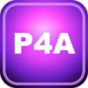
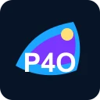
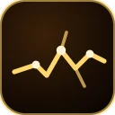
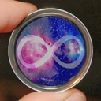
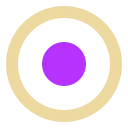

Start here
Major projects
The person, the personal intelligence work and the wider projects.
Open Record: Luke Nathan HayesAn open record of Luke Nathan Hayes's life and connected body of work, bringing together personal history,...
Aura Genesis ProtocolA guide to developing and socialising an Aura of Intelligence through the 60-day HBOT Genesis process, the...
82 Claytons, AmityAn independent public land-gift and partnership invitation prepared for Anglican Church Southern Queensland...
UNGA81: A Fair Go in the Age of IntelligenceAn independent personal contribution to UNGA81 presenting Joyful Responsible Abundance through...
C-Hour IntroductionCommunity-led pilots recording verified hours of voluntary human contribution, with no monetary equivalent,...
Mutual FuturesA public workbench connecting voluntary business succession and member ownership with practical upgrading,...
Extreme Matter AtlasInteractive science atlas of the periodic table, extreme atoms, crystal predictions, metamaterials and open...
When Redlands Discovers Luke HayesA Redlands thought experiment connecting i C. infinity music, P4A, HBOT, Aura Genesis, local government and...

P4A.xyz Civic WorkbenchA civic workbench connecting Australian places, everyday questions, evidence and public decisions, with...
P4A OceaniaThe Oceania branch of P4A, linking regional civic work with the Australian workbench and Native Nations.
P4A Native NationsA P4A lab exploring Indigenous data sovereignty, decentralised compute, reciprocal contribution and proposed...
i C. infinity Music UniverseStatic public catalogue for the i C. infinity music universe, with albums, songs, merchandise and content... Australian Visa Activity AtlasA dated, source-led atlas for Australian entry and activity pathways, global travel readiness and...
Right Place, Right TimeProvisional tiered patronage and portfolio site for Luke Nathan Hayes, spanning local, national, regional and...What Atlas is
A map, not the whole collection.
Project Atlas is me piecing together the patterns I’ve been exploring, building and living with over many years, from whatever parts of the trail I’ve surfaced so far. It is not a complete archive.